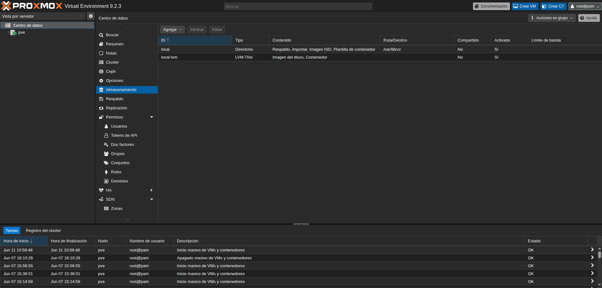
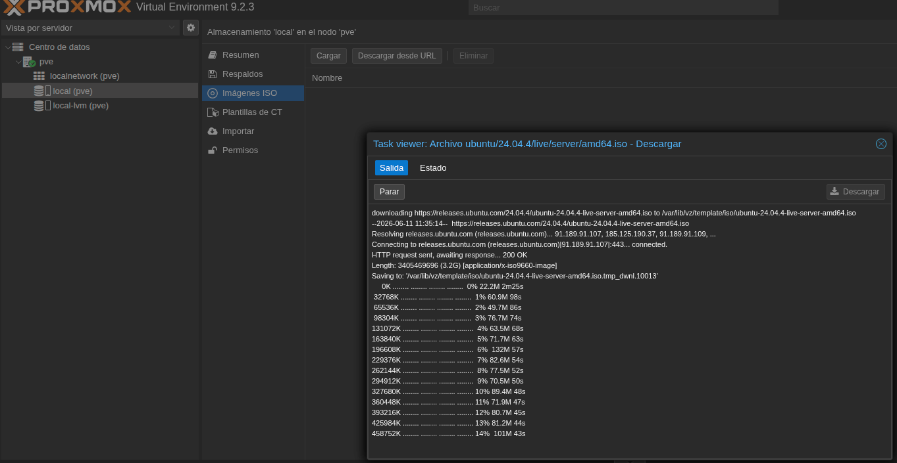
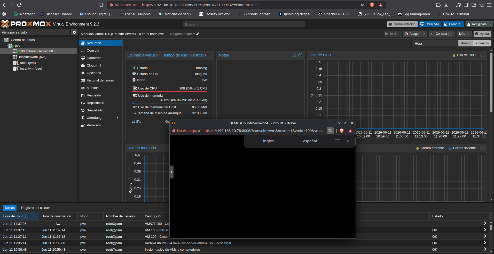
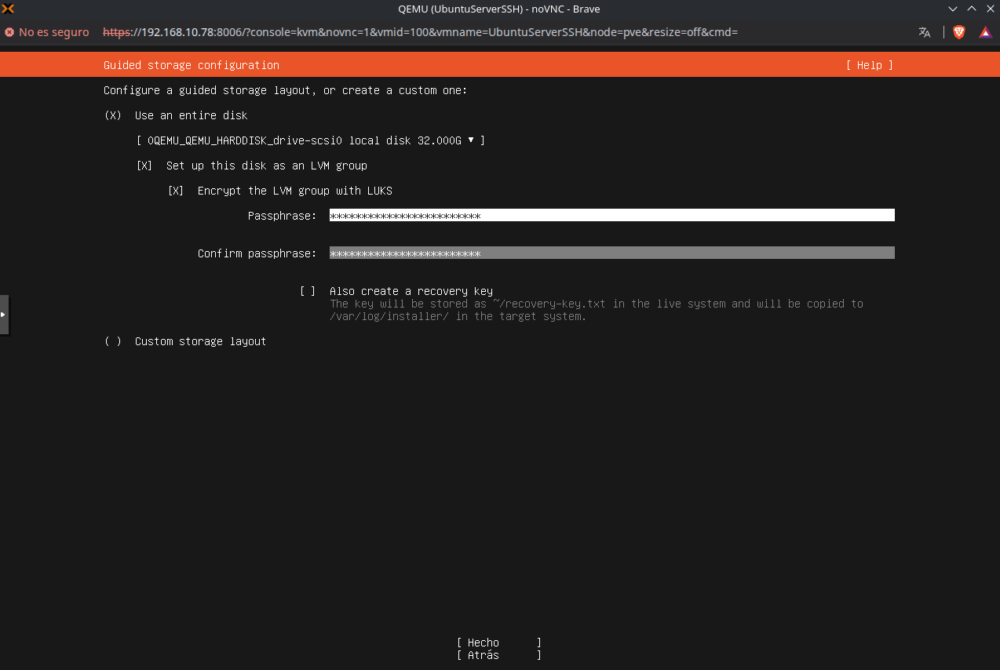
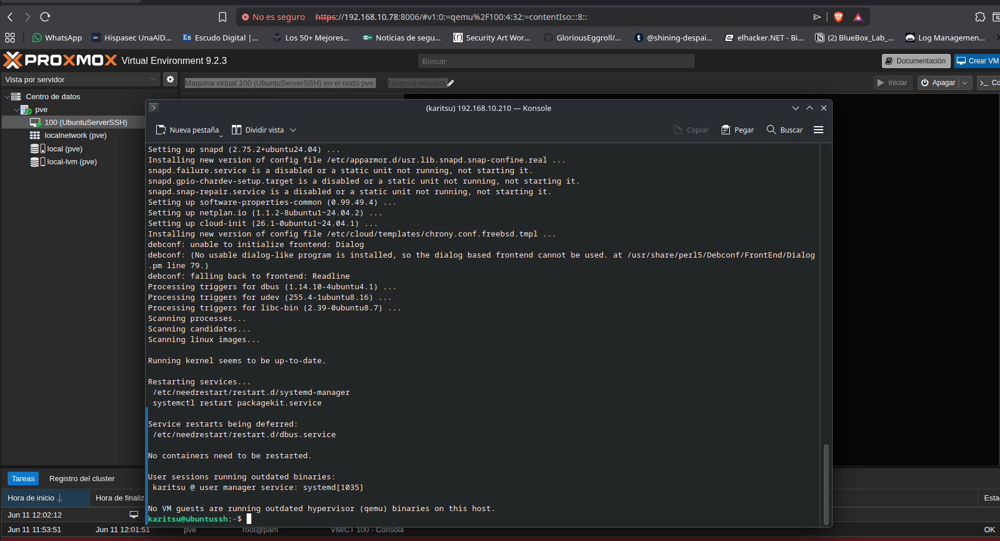

En esta segunda entrada de la serie Bluebox se documenta el proceso de creación de la primera máquina virtual sobre Proxmox VE: un Ubuntu Server 24.04 LTS con acceso SSH habilitado. Este será el contenedor base sobre el que se desplegarán servicios adicionales en el futuro.
1. Descarga de la ISO de Ubuntu Server
Desde el panel de administración de Proxmox, se accedió a la sección local (pve) > ISO Images. Inicialmente, la opción "Download from URL" no resultó inmediatamente evidente — se encuentra en la interfaz de almacenamiento local del nodo, no en un apartado independiente. Una vez localizada, se introdujo la URL de descarga directa:
https://releases.ubuntu.com/24.04/ubuntu-24.04-live-server-amd64.iso
Una vez descargada, la ISO quedó disponible en el almacenamiento local y visible en la interfaz de ISO Images.

2. Creación de la máquina virtual
Se creó una nueva máquina virtual con los siguientes recursos asignados:
| Recurso | Asignado |
|---|---|
| RAM | 2 GB |
| CPU | 1 núcleo |
| Disco | 20 GB |
| SO | Ubuntu Server 24.04 LTS |
Durante el asistente de creación se seleccionó la ISO descargada, se configuró la red en modo bridge para que la VM obtuviera una IP dentro de la red local, y se habilitó el agente QEMU para una mejor integración con el hipervisor.

3. Instalación de Ubuntu Server
Tras iniciar la VM, se procedió con la instalación estándar de Ubuntu Server. Las decisiones principales durante el instalador fueron:
- Instalación mínima — sin paquete gráfico ni herramientas adicionales
- OpenSSH server activado durante la instalación para permitir el acceso remoto inmediato
- Usuario administrador creado con contraseña segura

Al finalizar la instalación, la VM se reinició automáticamente y quedó operativa en la red local con la IP 192.168.10.210.
4. Acceso SSH desde el equipo principal
Desde el equipo principal se verificó la conectividad SSH contra la nueva VM:
ssh usuario@192.168.10.210
La conexión se estableció correctamente, confirmando que el servidor SSH estaba operativo y que la VM respondía en la red local.
5. Resumen de configuración final
- Hipervisor: Proxmox VE — Dell Latitude
- VM: Ubuntu Server 24.04 LTS
- Recursos: 2 GB RAM / 1 CPU / 20 GB disco
- IP local:
192.168.10.210 - Acceso: SSH habilitado —
ssh usuario@192.168.10.210 - Acceso remoto: Vía Tailscale + split tunneling (configurado en Misión 0)
6. Incidencias
Durante el proceso se encontraron las siguientes dificultades:
- La sección para descargar ISOs no estaba visible inicialmente. Se resolvió accediendo a local (pve) > ISO Images > Download from URL.
- Los enlaces de descarga directa de las ISOs de Ubuntu no siempre son fáciles de localizar en el sitio oficial. Se recomienda verificar la URL antes de introducirla.
La VM se completó el 11/06/2026 en un intervalo de 11:01 a 12:08.